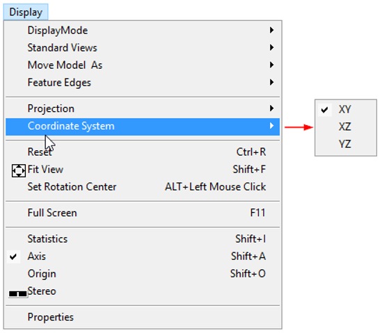
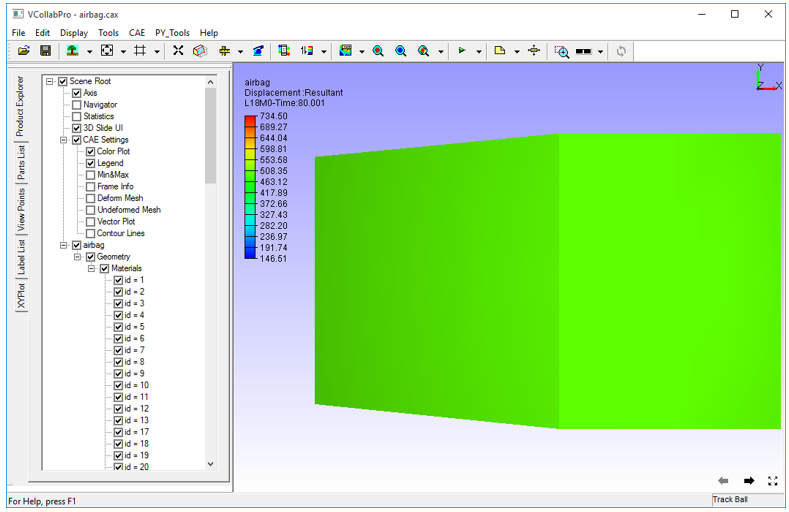
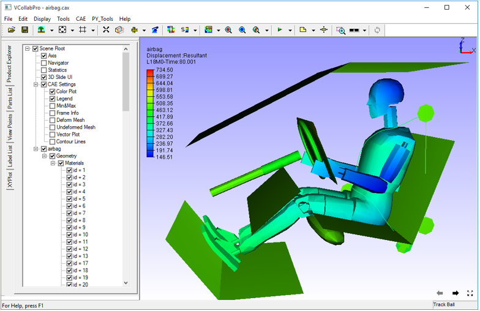
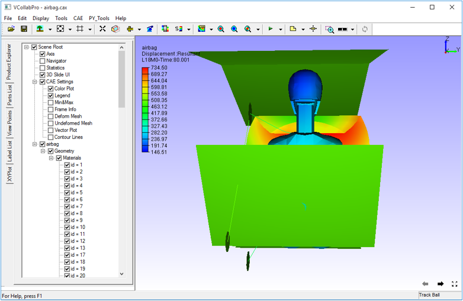

Coordinate System
VCollab Pro users can switch to YZ and XZ coordinate systems using the coordinate system option from the default XY coordinate system.

The three coordinate systems are explained below.
| XY | X is the horizontal axis and Y is the vertical axis. Z axis should point towards the viewer in front view. |
| XZ | X is the horizontal axis and Z is the vertical axis. Y axis should point towards the viewer in front view. |
| YZ | Y is the horizontal axis and Z is the vertical axis. X axis should point towards the viewer in front view. |
The following images show a model in all the coordinate systems.
XY Coordinate System

XZ Coordinate System

YZ Coordinate System
